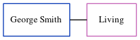

Ada Mary Hood (née Collins) 1895 - c1977
[ Home ] | [ Calendar ] | [ Surnames Index ] | [ Errors ] | [ Family History ]The child of William Collins (an agricultural labourer) and Ann Ralph, Ada Collins, the second cousin twice-removed on the father's side of Nigel Horne, was born in Dover, Kent, England on 10 Jul 18951,2,3, was baptised in Hawkinge, Kent, England on 13 Dec 1896 and married John Hood (with whom she had 3 children: Raymond A, Wilfred Alan and Kathleen Muriel, along with 1 surviving child) in Elham, Kent, England around Nov 19195.
During her life, she was living at Everden, Alkham, Kent on 31 Mar 19016 and on 2 Apr 19111; and at Elvington Cottage, Newington, Kent on 29 Sept 19392.
She died c. Feb 1977 in Shepway, Kent, England4.
Parents
- William
- Ann Epps was born in 1859
Children
- Wilfred Alan was born on 23 Apr 1924
- Kathleen Muriel was born on 8 Oct 1928
Citations
- 1911 Census for England & Wales - Findmypast (was age 14 and the daughter of the head of the household)
- 1939 Register - Findmypast (was the wife of the head of the household)
- England & Wales births 1837-2006 - Findmypast
- England & Wales deaths 1837-2007 - Findmypast
- England & Wales Marriages 1837-2005 - Findmypast
- 1901 England, Wales & Scotland Census - Findmypast (was age 4 and the daughter of the head of the household)
Media
England & Wales births 1837-2006 - BMD/B/1896/3/AZ/000120/093
England & Wales marriages 1837-2005 - BMD/M/1919/4/AZ/000276/026
England Births & Baptisms 1538-1975 - R_884297424
Kent Baptisms - GBPRS/CANT/B/96339275
1939 Register - TNA/R39/1824/1824E/009/40
England & Wales deaths 1837-2007 - BMD/D/1977/1/AZ/000562/101
Family Tree
Map
Generated by ged2site. Last updated on Jul 3, 2024
Known Issues
Location for 31 Mar 1901 (Everden, Alkham, Kent, England) differs from mother's (Everden, Swingfield, Kent, England)
31 Mar 1901: Not living with either parent in childhood when aged 5
2 Apr 1911: Not living with either parent in childhood when aged 15
Listed in the residence for 29 Sep 1939, but spouse John Hood is not